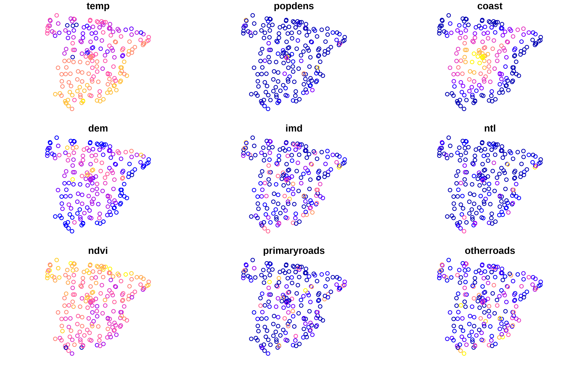
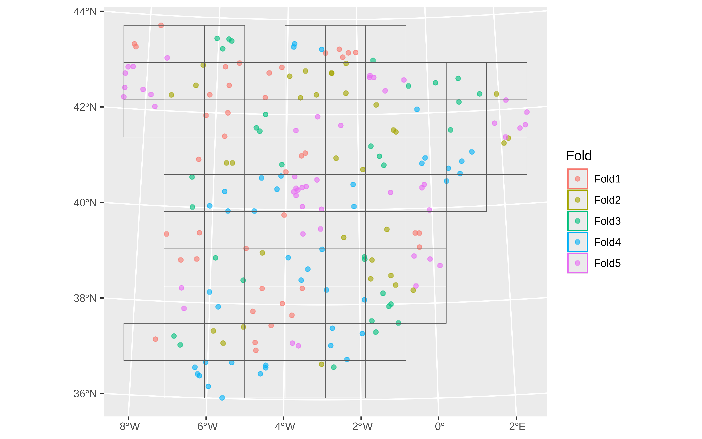
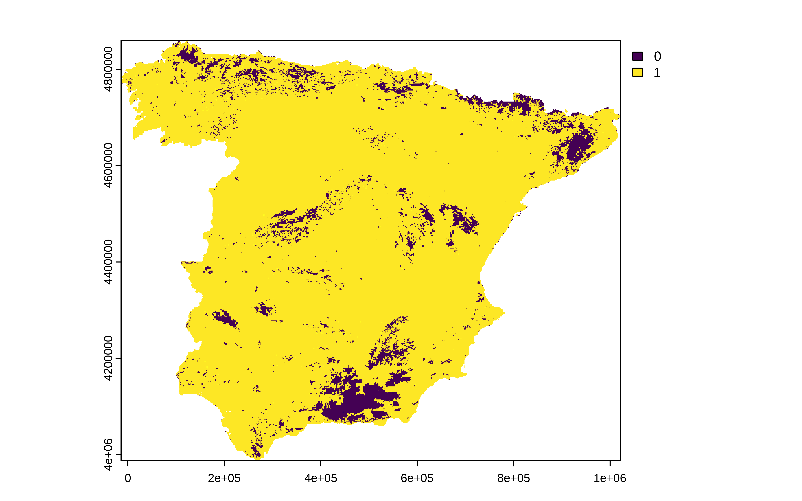

Área de Aplicación
Este puente he estado leyendo sobre AOA (area of applicability) . En el artículo de Hanna Mayer y Edzer Pebesma se centran en él área de aplicación de un modelo cuando se quiere predecir en temas espaciales.
El concepto es bastante simple. Tienes un modelo de estos modernos de random forest o boosting, que has entrenado con unos datos maravillosos. Y ahora lo quieres utilizar para obtener predicciones en otro conjunto de datos. El área de aplicación lo que te dice es en qué datos de esos nuevos datos el modelo se puede aplicar. La idea es sencilla, simplemente calcula la distancia multivariable entre los puntos del nuevo conjunto de datos y los datos de train. Pero no es lo mismo estar muy lejos en una de las variables más importantes del modelo que en una de las últimas. Por eso lo que hacen es ponderar las distancias por la importancia de las variables en el modelo.
Todo esto tiene que ver con cosas como el concepto de “Data Drift”, en el cual vemos si la distribución multivariable en el espacio de los predictores ha cambiado mucho entre train y test. Si esto es así entonces decimos que algo hay raro con los datos. También tiene que ver con que los modelos de árboles no son muy buenos extrapolando más allá del dominio de la variable que han visto, y esto lo que mira es si los datos a predecir están muy lejos de un “entorno” multivariable de los datos de train.
Evidentemente, en el artículo viene bien explicado todo esto y formalizan una técnica para identificar en qué puntos de test se puede aplicar el modelo.
Ejemplo
En este post Jakub Nowosad pone un ejemplo utilizando 196 datos de train para predecir la temperatura en España. En el post también se cuenta la importancia de utilizar validación cruzada que tenga en cuenta la estructura espacial.
Reproduzco su ejemplo
Veamos los datos de train, tanto el dataframe y la geometría en puntos.
Show the code
dim(temperature_train)
#> [1] 195 16
head(temperature_train)
#> Simple feature collection with 6 features and 15 fields
#> Geometry type: POINT
#> Dimension: XY
#> Bounding box: xmin: 825940.4 ymin: 4541533 xmax: 934920.7 ymax: 4630234
#> Projected CRS: ED50 / UTM zone 30N
#> temp popdens coast dem imd ntl ndvi
#> 1 17.52610 0.000000 1.1263009 85.905403 27.35911 20.126450 0.3656146
#> 2 16.94795 1.211701 6.7432733 75.001259 16.85467 8.056596 0.3990190
#> 3 17.49233 5.681698 1.7549587 2.556155 83.21948 180.887161 0.1987631
#> 4 15.30838 4752.076660 45.7688789 256.110870 40.66405 36.842339 0.3861388
#> 5 16.56247 1789.268799 6.2198448 303.596924 10.92374 32.897446 0.5917153
#> 6 17.22139 13260.116211 0.7378924 12.070770 71.19122 101.807602 0.2349442
#> primaryroads otherroads urban industry agriculture natural CAMSpm25
#> 1 4.6346059 3.773046 0.0000000 0.2819442 0.000000000 0.718055785 8.077613
#> 2 0.0000000 2.709918 0.0000000 0.3051900 0.694810033 0.000000000 9.175149
#> 3 3.2220817 10.960647 0.0000000 0.9983283 0.000000000 0.001671706 13.225924
#> 4 2.1847610 10.480736 0.4981315 0.1316080 0.001148467 0.369112104 11.543165
#> 5 1.1234889 7.831644 0.1739137 0.0000000 0.000000000 0.826086283 15.923594
#> 6 0.6130284 17.779205 0.5526261 0.3982369 0.000000000 0.049137004 15.647901
#> lst_day geometry
#> 1 24.37792 POINT (825940.4 4541533)
#> 2 28.13341 POINT (849548.2 4563427)
#> 3 25.76198 POINT (924683.3 4583884)
#> 4 26.97013 POINT (902776.4 4630234)
#> 5 22.47704 POINT (928394.5 4598097)
#> 6 24.79462 POINT (934920.7 4595391)
plot(temperature_train)
Librerías
La librería waywiser implementa lo del área de aplicación de forma que se pueda usar con tidymodels.
Show the code
library(tidymodels) # metapackage for modeling
library(spatialsample) # for spatial cross-validation
library(waywiser) # for area of applicability
library(vip) # for variable importance (used in AOA)Hace folds espaciales, de forma que dentro de un fold caigan datos que están cercanos espacialmente
Show the code
set.seed(22)
form <- as.formula(paste0("temp ~ ", paste(predictor_names, collapse = " + ")))
recipe <- recipes::recipe(form, data = temperature_train)
rf_model <- parsnip::rand_forest(
trees = 100,
mtry = 8,
min_n = 5,
mode = "regression"
) |>
set_engine("ranger", splitrule = "extratrees", importance = "impurity")
workflow <- workflows::workflow() |>
workflows::add_recipe(recipe) |>
workflows::add_model(rf_model)
block_folds <- spatialsample::spatial_block_cv(temperature_train, v = 5)
spatialsample::autoplot(block_folds)
El modelo
Show the code
rf_spatial <- tune::fit_resamples(
workflow,
resamples = block_folds,
control = tune::control_resamples(save_pred = TRUE, save_workflow = TRUE)
)
model_tidymodels <- fit_best(rf_spatial)
tune::collect_metrics(rf_spatial)
#> # A tibble: 2 × 6
#> .metric .estimator mean n std_err .config
#> <chr> <chr> <dbl> <int> <dbl> <chr>
#> 1 rmse standard 1.12 5 0.0871 Preprocessor1_Model1
#> 2 rsq standard 0.851 5 0.0517 Preprocessor1_Model1Para hacer la predicción sobre toda España, se puede utilzar la función predict de la librería terra que puede tomar un objeto raster como datos de entrada.
Área de Aplicación.
Ahora tomando como imput los datos de train, los de test y la importancia de las variables se calcula el área de aplicación.
Show the code
model_aoa <- waywiser::ww_area_of_applicability(
st_drop_geometry(temperature_train[, predictor_names]),
importance = vip::vi_model(model_tidymodels)
)
AOA_tidymodels <- terra::predict(predictor_stack, model_aoa)
plot(AOA_tidymodels$aoa)
Y vemos que la zona de Sierra Nevada y la Alpujarra están fuera del área de aplicación y por tanto las predicciones que se obtengan ahí hay que tomarlas con cautela.
Show the code
head(as.data.frame(AOA_tidymodels$aoa))
#> aoa
#> 138 0
#> 1174 1
#> 1175 1
#> 2191 0
#> 2192 1
#> 2193 1
# hay unas 40 mil filas que caen fuera del área de apliación
table(as.data.frame(AOA_tidymodels$aoa)$aoa)
#>
#> 0 1
#> 41527 454952Coda
Esta técnica se puede aplicar a cualquier tipo de datos y constituye un indicador más de la incertidumbre. Me parece una herramienta bastante útil para encontrar conjuntos de datos en los que si se pueda aplicar el modelo.